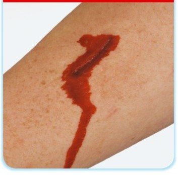
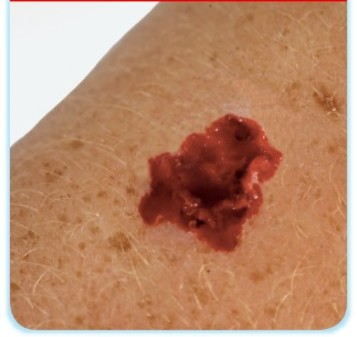
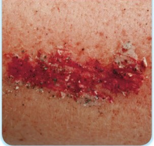
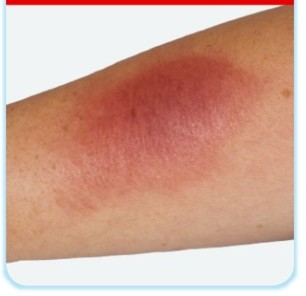
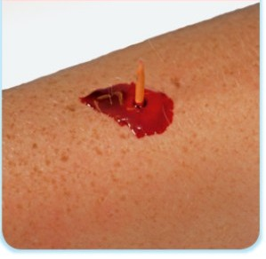
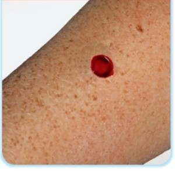

Wounds & Bleeding
🎯 Learning Objectives
- ✅ Identify the severity of external bleeding
- ✅ Identify how to administer first aid for small cuts, grazes, and bruises
- ✅ Demonstrate how to control external bleeding
Identifying Severity of External Bleeding
The severity of bleeding depends on the type of blood vessel damaged. Recognising the difference helps you decide how urgently to act and what treatment to provide.
Capillary Bleeding
Slow oozing from small blood vessels near the skin surface. Seen in minor cuts, grazes, and abrasions.
Venous Bleeding
Steady flow from damaged veins. Blood is darker in colour as it carries less oxygen.
Arterial Bleeding
Spurting blood from arteries — the most dangerous type. Blood is bright red and pulses with the heartbeat.
Types of Wounds
Different types of wounds have different characteristics and require different first aid approaches. Understanding the wound type helps you assess severity and provide appropriate treatment.
Incision
A clean, straight cut made by a sharp object (knife, glass, razor blade).
Laceration
A jagged, irregular tear caused by blunt force or tearing (fall, impact, machinery).
Abrasion
A scrape or graze caused by friction (fall on concrete, road rash, friction burn).
Contusion (Bruise)
Internal bleeding under intact skin from blunt force impact (blow, fall).
Puncture Wound
A small hole made by a sharp object (nail, needle, thorn) penetrating deep.
Velocity Wound
Severe tissue damage from high-speed impact (bullet, blast, machinery crush).
Treating Small Cuts, Grazes & Bruises
Clean the Wound
Put on disposable glove. Expose and examine the wound. Apply direct pressure with your fingers or palm of hand.
Apply a Sterile Dressing
Cover the wound with an appropriately sized sterile adhesive dressing (plaster) or sterile gauze pad. This protects against infection.
For Bruises
Apply a cold compress or ice pack wrapped in a cloth for up to 20 minutes. This reduces swelling and pain. Elevate the bruised area if possible. Do not apply ice directly to the skin.
🧠 Scenario Quiz — Wounds & Bleeding
Test your knowledge with these scenarios. Select the best answer for each question.
Seizures
🎯 Learning Objective
- ✅ Identify how to administer first aid to a casualty experiencing a seizure
What Is a Seizure?
A seizure happens when there is a sudden burst of abnormal electrical activity in the brain. This can cause uncontrollable shaking (convulsions), changes in behaviour, movements, feelings, or levels of consciousness. Seizures can be caused by epilepsy, head injury, high temperature in children (febrile seizures), poisoning, or low blood sugar.
Recognising a Seizure
Signs to Look For
After the Seizure
How to Help During a Seizure
⚠️ NEVER restrain the person or put anything in their mouth
Attempting to hold the person down can cause injury. The myth of "swallowing the tongue" is false — it is physically impossible.
Protect from Injury
Clear away any objects that could cause harm (furniture, sharp items). If possible, cushion the head with something soft like a folded jacket. Do not move the casualty unless they are in immediate danger.
Note the Time
Time how long the seizure lasts. This information is vital for paramedics. If the seizure lasts longer than 5 minutes, call 999 immediately.
Once Convulsions Stop
Place the casualty in the recovery position to keep their airway clear. Check their breathing. Stay with them and reassure them as they regain consciousness. Provide a calm, quiet environment.
Call 999 If…
The seizure lasts more than 5 minutes, they don't regain consciousness, it's their first seizure, they have another seizure shortly after, they are injured, or they have difficulty breathing after the seizure stops.
🧠 Scenario Quiz — Seizures
Test your knowledge with these scenarios.
Minor Burns & Scalds
🎯 Learning Objective
- ✅ Identify how to administer first aid to a casualty with minor burns and scalds
Understanding Burns & Scalds
A burn is caused by dry heat (flames, hot objects, friction, sunburn). A scald is caused by wet heat (steam, hot liquids). Both damage the skin and surrounding tissue. Minor (superficial) burns affect only the outer layer of skin (epidermis) and are characterised by redness, swelling, and pain.
Superficial Burns
The outer layer of skin is burnt causing redness, tenderness and inflammation. The skin is not broken or blistered.
Partial Thickness Burns
The outer layer of the skin is burnt and broken, causing blistering, swelling, pain and rawness.
Full Thickness Burns
All the layers of skin have been damaged causing the skin to look pale, charred and waxy with fatty deposits. There may also be nerve damage.
When to Seek Medical Help
Treating Minor Burns & Scalds
Cool the Burn Immediately
Hold the burn under cool (not ice-cold) running water for a minimum of 20 minutes. This is the single most important first aid step. Start cooling as soon as possible — cooling is effective up to 3 hours after the burn occurred.
Remove Clothing & Jewellery
Carefully remove clothing and jewellery near the burn before swelling starts — but only if they are not stuck to the skin. Never pull clothing that is adhered to the burn.
Cover the Burn
After cooling, cover with cling film lengthways (not wrapped around) or a clean, non-fluffy material. This helps prevent infection while allowing medical professionals to see the burn.
⚠️ DO NOT:
🧠 Scenario Quiz — Burns & Scalds
Test your knowledge with these scenarios.
Foreign Objects — Splinters
🎯 Learning Objective
- ✅ Identify how to administer first aid to a casualty with small splinters
What Is a Splinter?
A splinter is a small fragment of material — usually wood, glass, or metal — that becomes embedded under the skin. Splinters are common workplace injuries, especially in construction, carpentry, catering, and outdoor environments. While most are minor, they can cause infection if not properly removed.
Removing a Small Splinter
Clean the Area
Wash your hands and the area around the splinter with warm soapy water. This reduces the risk of introducing bacteria into the wound during removal.
Sterilise Tweezers
Clean the tips of fine-pointed tweezers with an alcohol wipe or antiseptic solution. This prevents infection during the removal process.
Grasp & Remove
Using the tweezers, grip the splinter as close to the skin surface as possible. Pull it out gently and firmly in the same direction it entered. Do not squeeze the surrounding skin as this can push the splinter deeper.
Clean & Cover
Once removed, clean the area again with warm soapy water. Apply a small sterile adhesive dressing (plaster) to protect the wound from dirt and bacteria.
Monitor for Infection
Over the next few days, watch for signs of infection: increasing redness, swelling, warmth, pain, or pus. If any of these develop, advise the casualty to seek medical attention.
⚠️ DO NOT Attempt Removal If:
Other Foreign Objects
Nose
Do not attempt to remove the object. Send the casualty to hospital for professional removal.
Ears
Do not attempt to remove the object unless it's a living object such as an insect. If it is an insect, try flooding the ear with tepid water to remove it.
If this doesn't work, cover the ear with a sterile dressing and send the casualty to hospital.
Swallowed
Seek medical attention as soon as possible.
If the object becomes stuck in the respiratory tract, follow the choking procedure.
🧠 Scenario Quiz — Foreign Objects
Test your knowledge with these scenarios.
📊 Your Results
Complete all quizzes above to see your total score.
Answer all questions to get your final score!